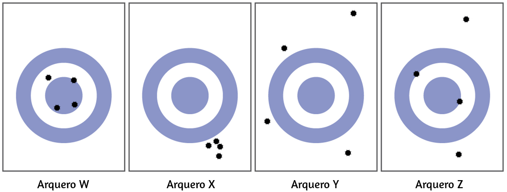

1. Explica cómo podrías determinar experimentalmente si la temperatura exterior es más alta o más baja que 0 °C (32 °F) sin usar un termómetro.
2. Identifica cada una de las siguientes afirmaciones como las más similares a una hipótesis, una ley o una teoría. Explica tu razonamiento.
(a) La caída de la presión barométrica precede al inicio del mal tiempo.
(b) Toda la vida en la tierra ha evolucionado de un organismo común y primitivo a través del proceso de selección natural.
(c) El millaje de gasolina de mi camión ha disminuido significativamente, probablemente debido a un ajuste.
3. Identifica cada una de las siguientes afirmaciones como las más similares a una hipótesis, una ley o una teoría. Explica tu razonamiento.
(a) La presión de una muestra de gas es directamente proporcional a la temperatura del gas.
(b) La materia consiste en pequeñas partículas que pueden combinarse en proporciones específicas para formar sustancias con propiedades específicas.
(c) A una temperatura más alta, los sólidos (como la sal o el azúcar) se disolverán mejor en el agua.
4. Identifica cada uno de los elementos subrayados como parte del dominio macroscópico, el dominio microscópico o el dominio simbólico de la química. Para cualquiera en el dominio simbólico, indica si son símbolos para una característica macroscópica o microscópica.
(a) La masa de un tubo de plomo es de 14 lb.
(b) La masa de un determinado átomo de cloro es de 35 amu.
(c) Una botella con una etiqueta que dice Al contiene aluminio metal.
(d) Al es el símbolo para un átomo de aluminio.
5. Identifica cada uno de los elementos subrayados como parte del dominio macroscópico, el dominio microscópico o el dominio simbólico de la química. Para aquellos en el dominio simbólico, indica si son símbolos para una característica macroscópica o microscópica.
(a) Una cierta molécula contiene un átomo de H y un átomo de Cl.
(b) El alambre de cobre tiene una densidad de aproximadamente 8 g/cm3.
(c) La botella contiene 15 gramos de polvo de Ni.
(d) Una molécula de azufre se compone de ocho átomos de azufre.
6. De acuerdo con una teoría, la presión de un gas aumenta a medida que su volumen disminuye porque las moléculas en el gas tienen que moverse una distancia más corta para golpear las paredes del recipiente. ¿Sigue esta teoría una descripción macroscópica o microscópica del comportamiento químico? Explica tu respuesta.
7. La cantidad de calor requerida para derretir 2 libras de hielo es dos veces la cantidad de calor requerida para derretir 1 libra de hielo. ¿Es esta observación una descripción macroscópica o microscópica del comportamiento químico? Explica tu respuesta.
8. ¿Por qué se utiliza la masa de un objeto, en lugar de su peso, para indicar la cantidad de materia que contiene?
9. ¿Qué propiedades distinguen los sólidos de los líquidos? ¿Líquidos de los gases? Sólidos de los gases?
10. ¿En qué se diferencia una mezcla heterogénea de una mezcla homogénea? ¿Cómo son similares?
11. ¿En qué se diferencia una mezcla homogénea de una sustancia pura? ¿Cómo son similares?
12. ¿En qué se diferencia un elemento de un compuesto? ¿Cómo son similares?
13. ¿En qué se diferencian las moléculas de elementos y las moléculas de compuestos? ¿De qué manera son similares?
14. ¿En qué se diferencia un átomo de una molécula? ¿De qué manera son similares?
15. Muchos de los artículos que compras son mezclas de compuestos puros. Selecciona tres de estos productos comerciales y prepara una lista de los ingredientes que son compuestos puros.
16. Clasifica cada uno de los siguientes como un elemento, un compuesto o una mezcla:
(a) cobre
(b) agua
(c) nitrógeno
(d) azufre
(e) aire
(f) sacarosa
(g) una sustancia compuesta de moléculas, cada una de las cuales contiene dos átomos de yodo
(h) gasolina
17. Clasifica cada uno de los siguientes como un elemento, un compuesto o una mezcla:
(a) hierro
(b) oxigeno
c) óxido de mercurio
(d) jarabe de panqueque
(e) dióxido de carbono
(f) una sustancia compuesta de moléculas, cada una de las cuales contiene un átomo de hidrógeno y un átomo de cloro
(g) bicarbonato de sodio
(h) levadura en polvo
18. Un átomo de azufre y una molécula de azufre no son idénticos. ¿Cuál es la diferencia?
19. ¿En qué se parecen las moléculas en el gas de oxígeno, las moléculas en el gas de hidrógeno y las moléculas de agua? ¿En qué se diferencian?
20. ¿Por qué se dice que los astronautas en el espacio son "sin peso", pero no "sin masa"?
21. Prepara una lista de los principales productos químicos consumidos y producidos durante la operación de un automóvil.
22. La materia está en todas partes a nuestro alrededor. Haz una lista por nombre de quince tipos diferentes de materia que encuentras todos los días. Tu lista debe incluir (y etiquetar al menos un ejemplo de cada uno) lo siguiente: un sólido, un líquido, un gas, un elemento, un compuesto, una mezcla homogénea, una mezcla heterogénea y una sustancia pura.
23. Cuando el hierro elemental se corroe, se combina con el oxígeno en el aire para formar, en última instancia, un óxido de hierro marrón (III) llamado óxido. (a) Si se pesa un clavo de hierro brillante con una masa inicial de 23.2 g después de haber sido recubierto con una capa de óxido, ¿esperarías que la masa haya aumentado, disminuido o permanezca igual? Explica. (b) Si la masa del clavo de hierro aumenta a 24.1 g, ¿qué masa de oxígeno se combina con el hierro?
24. Como se indica en el texto, los ejemplos convincentes que demuestran la ley de conservación de la materia fuera del laboratorio son pocos y distantes entre sí. Indica si la masa aumentaría, disminuiría o se mantendría igual en los siguientes escenarios en los que se producen reacciones químicas:
(a) Se coloca exactamente una libra de masa de pan en un molde para hornear. La masa se cocina en un horno a 350 °F, liberando un maravilloso aroma de pan recién horneado durante el proceso de cocción. ¿La masa del pan horneado es menor, mayor o igual que la libra de la masa original? Explica.
(b) Cuando el magnesio se quema en el aire, se produce una ceniza blanca de óxido de magnesio. ¿Es la masa de óxido de magnesio menor, mayor o igual que la pieza original de magnesio? Explica.
(c) Antoine Lavoisier, el científico francés acreditado por primera vez que establece la ley de conservación de la materia, calentó una mezcla de estaño y aire en una matraz sellada para producir óxido de estaño. ¿La masa y el contenido del matraz sellado disminuyeron, aumentaron o permanecieron iguales después del calentamiento?
25. La levadura convierte la glucosa en etanol y dióxido de carbono durante la fermentación anaeróbica como se muestra en la ecuación química simple aquí:
glucosa → etanol + dióxido de carbono
(a) Si 200.0 g de glucosa se convierten completamente, ¿cuál será la masa total de etanol y dióxido de carbono producido?
(b) Si la fermentación se lleva a cabo en un contenedor abierto, ¿esperarías que la masa del contenedor y su contenido después de la fermentación sea menor, mayor o igual que la masa del contenedor y el contenido antes de la fermentación? Explica.
(c) Si se producen 97.7 g de dióxido de carbono, ¿qué masa de etanol se produce?
26. Clasifica las seis propiedades subrayadas en el siguiente párrafo como químicas o físicas:
El flúor es un gas amarillo pálido que reacciona con la mayoría de las sustancias. El elemento libre se funde a −220 °C y hierve a −188 °C. Los metales finamente divididos se queman en flúor con una llama brillante. Diecinueve gramos de flúor reaccionarán con 1,0 gramo de hidrógeno.
27. Clasifica cada uno de los siguientes cambios como físicos o químicos:
a) La condensación de vapor
(b) La quema de gasolina
(c) La leche agria
(d) Disolución del azúcar en agua
(e) fusión de oro
28. Clasifica cada uno de los siguientes cambios como físicos o químicos:
(a) quema de carbón
(b) deshielo
(c) Mezclar el jarabe de chocolate con leche
(d) explosión de un petardo
(e) Magnetización de un destornillador
29. El volumen de una muestra de gas de oxígeno cambió de 10 ml a 11 ml a medida que cambiaba la temperatura. ¿Es este un cambio químico o físico?
30. Un volumen de 2.0 litros de gas hidrógeno combinado con 1.0 litros de gas oxígeno para producir 2.0 litros de vapor de agua. ¿El oxígeno sufre un cambio químico o físico?
31. Explica la diferencia entre propiedades extensivas y propiedades intensivas.
32. Identifica las siguientes propiedades como extensivas o intensivas.
(a) volumen
(b) temperatura
(c) humedad
(d) calor
(e) punto de ebullición
33. La densidad (d) de una sustancia es una propiedad intensiva que se define como la relación de su masa (m) a su volumen (V).
densidad = masavolumen = mV
Teniendo en cuenta que tanto la masa como el volumen son propiedades extensivas, explica por qué su relación, densidad, es intensiva.
34. ¿Un litro es aproximadamente una onza, una pinta, un litro o un galón?
35. ¿Un metro mide aproximadamente una pulgada, un pie, una yarda o una milla?
36. Indica las unidades base del SI o las unidades derivadas que son apropiadas para las siguientes mediciones:
(a) la longitud de una carrera de maratón (26 millas, 385 yardas)
(b) La masa de un automóvil
(c) El volumen de una piscina
(d) La velocidad de un avión
(e) La densidad del oro
(f) El área de un campo de fútbol
(g) la temperatura máxima en el Polo Sur el 1 de abril de 1913
37. Indica las unidades base del SI o las unidades derivadas que son apropiadas para las siguientes mediciones:
(a) La masa de la luna
(b) la distancia de Dallas a Oklahoma City
(c) La velocidad del sonido
(d) La densidad del aire
(e) La temperatura a la que hierve el alcohol
(f) El área del departamento de Antioquia
(g) el volumen de una vacuna contra la gripe o una vacuna contra el sarampión
38. Da el nombre y el símbolo de los prefijos utilizados con las unidades SI para indicar la multiplicación por las siguientes cantidades exactas
(a) 103
(b) 10−2
(c) 0.1
(d) 10−3
(e) 1,000,000
(f) 0.000001
39. Indica el nombre del prefijo y la cantidad indicada por los siguientes símbolos que se utilizan con las unidades base SI.
(a) c
(b) d
(c) G
(d) k
(e) m
(f) n
(g) p
(h) T
40. Una gran pieza de joyería tiene una masa de 132.6 g. Un cilindro graduado inicialmente contiene 48.6 mL de agua. Cuando la joya se sumerge en el cilindro graduado, el volumen total aumenta a 61.2 ml.
(a) Determine la densidad de esta pieza de joyería
(b) Suponiendo que la joya está hecha de una sola sustancia, ¿qué sustancia es probable que sea? Explica.
Los problemas 41 a 43 están relacionados con una simulación de Phet. Por estar en formato flash, no los incorporamos en este libro.
44. Expresa cada uno de los siguientes números en notación científica con cifras significativas correctas:
(a) 711.0
(b) 0.239
(c) 90743
(d) 134.2
(e) 0.05499
(f) 10000.0
(g) 0.000000738592
45. Expresa cada uno de los siguientes números en notación exponencial con cifras significativas correctas:
(a) 704
(b) 0.03344
(c) 547.9
(d) 22086
(e) 1000.00
(f) 0.0000000651
(g) 0.007157
46. Indica si cada uno de los siguientes puntos puede determinarse con exactitud o si debe medirse con cierto grado de incertidumbre:
a) El número de huevos en una cesta
(b) La masa de una docena de huevos
(c) el número de galones de gasolina necesarios para llenar un tanque de gasolina de automóvil
(d) el número de cm en 2 m
(e) la masa de un libro de texto
(f) el tiempo requerido para conducir desde Medellín a Bogotá a una velocidad promedio de 53 km/h
47. Indica si cada uno de los siguientes puntos puede determinarse con exactitud o si debe medirse con algún grado de incertidumbre:
(a) el número de segundos en una hora
(b) el número de páginas en este libro
(c) el número de gramos en tu peso
(d) el número de gramos en 3 kilogramos
(e) el volumen de agua que bebes en un día
(f) la distancia de Medellín a Bogotá
48. ¿Cuántas cifras significativas están contenidas en cada una de las siguientes mediciones?
(a) 38.7 g
(b) 2 × 1018 m
(c) 3,486,002 kg
(d) 9.74150 × 10−4 J
(e) 0.0613 cm3
(f) 17.0 kg
(g) 0.01400 g/mL
49. ¿Cuántas cifras significativas están contenidas en cada una de las siguientes mediciones?
(a) 53 cm
(b) 2.05 × 108 m
(c) 86,002 J
(d) 9.740 × 104 m/s
(e) 10.0613 m3
(f) 0.17 g/mL
(g) 0.88400 s
50. Las siguientes cantidades fueron reportadas en las etiquetas de productos comerciales. Determina el número de cifras significativas en cada uno.
(a) 0.0055 g de ingredientes activos
(b) 12 comprimidos
(c) 3% de peróxido de hidrógeno
(d) 5.5 onzas
(e) 473 ml
(f) 1.75% de bismuto
(g) 0,001% de ácido fosfórico
(h) 99.80% de ingredientes inertes.
51. Redondea cada uno de los siguientes números a dos cifras significativas:
(a) 0.436
(b) 9.000
(c) 27.2
(d) 135
(e) 1.497 × 10−3
(f) 0.445
52. Redondea cada uno de los siguientes números a dos cifras significativas:
(a) 517
(b) 86.3
(c) 6.382 × 103
(d) 5.0008
(e) 22.497
(f) 0.885
53. Realiza los siguientes cálculos e informa cada respuesta con el número correcto de cifras significativas.
(a) 628 × 342
(b) (5.63 × 102) × (7.4 × 103)
(c) 28.013.483
(d) 8119 × 0.000023
(e) 14.98 + 27,340 + 84.7593
(f) 42.7 + 0.259
54. Realiza los siguientes cálculos e informa cada respuesta con el número correcto de cifras significativas.
(a) 62.8 × 34
(b) 0.147 + 0.0066 + 0.012
(c) 38 × 95 × 1.792
(d) 15 - 0.15 - 0.6155
(e) 8,78 × (0.05000.478)
(f) 140 + 7.68 + 0.014
(g) 28.7 - 0.0483
(h) (88.5 − 87.57)45.13
55. Considera los resultados del concurso de tiro con arco que se muestra en esta figura.

(a) ¿Cuál arquero es más preciso?
(b) ¿Cuál arquero es el más exacto?
(c) ¿Quién es menos preciso y menos exacto?
56. Clasifica los siguientes conjuntos de mediciones como exactos, precisos, ambos o ninguno.
(a) Comprobación de la consistencia en el peso de las galletas con chispas de chocolate: 17,27 g, 13,05 g, 19,46 g, 16,92 g
(b) Prueba del volumen de un lote de pipetas de 25 ml: 27.02 ml, 26.99 ml, 26.97 ml, 27.01 ml
(c) Determinación de la pureza del oro: 99.9999%, 99.9998%, 99.9998%, 99.9999%
57. Escribe los factores de conversión (como razones) para el número de:
(a) yardas en 1 metro
(b) litros en 1 cuarto de líquido
(c) libras en 1 kilogramo
58. Escribe los factores de conversión (como razones) para el número de:
(a) kilómetros en 1 milla
(b) litros en 1 pie cúbico
(c) gramos en 1 onza
59. La etiqueta en una botella de refresco da el volumen en dos unidades: 2.0 L y 67.6 fl oz. Utiliza esta información para derivar un factor de conversión entre el inglés y las unidades métricas. ¿Cuántas cifras significativas puedes justificar en tu factor de conversión?
60. La etiqueta en una caja de cereal da la masa de cereal en dos unidades: 978 gramos y 34.5 oz. Utiliza esta información para encontrar un factor de conversión entre las unidades inglesas y métricas. ¿Cuántas cifras significativas puedes justificar en tu factor de conversión?
61. El fútbol se juega con una pelota redonda que tiene una circunferencia entre 27 y 28 pulgadas y un peso entre 14 y 16 oz. ¿Cuáles son estas especificaciones en unidades de centímetros y gramos?
62. El balón de baloncesto femenino tiene una circunferencia entre 28.5 y 29.0 pulgadas y un peso máximo de 20 onzas (dos cifras significativas). ¿Cuáles son estas especificaciones en unidades de centímetros y gramos?
63. ¿Cuántos mililitros de un refresco están contenidos en una lata de 12.0 oz?
64. Un barril de petróleo es exactamente 42 gal. ¿Cuántos litros de petroleo hay en un barril?
65. El diámetro de un glóbulo rojo es de aproximadamente 3 × 10−4 pulgadas. ¿Cuál es su diámetro en centímetros?
66. La distancia entre los centros de los dos átomos de oxígeno en una molécula de oxígeno es de 1.21 × 10−8 cm. ¿Cuál es esta distancia en pulgadas?
67. ¿Un levantador de peso de 197 lb es lo suficientemente liviano para competir en una clase limitada para aquellos que pesan 90 kg o menos?
68. Un levantador de pesas muy bueno de 197 libras levantó 192 kg. ¿Cuál fue la masa del peso levantado en libras?
69. Muchas pruebas de laboratorio médico se realizan con 5.0 μL de suero sanguíneo. ¿Qué es este volumen en mililitros?
70. Si una tableta de aspirina contiene 325 mg de aspirina, ¿cuántos gramos de aspirina contiene?
71. Usa la notación científica (exponencial) para expresar las siguientes cantidades en términos de las unidades base del SI en la Tabla 1.3:
(a) 0.13 g
(b) 232 Gg
(c) 5.23 pm
(d) 86.3 mg
(e) 37.6 cm
(f) 54 μm
(g) 1 Ts
(h) 27 ps
(i) 0.15 mK
72. Completa las siguientes conversiones entre unidades SI.
(a) 612 g = ________ mg
(b) 8.160 m = ________ cm
(c) 3779 μg = ________ g
(d) 781 mL = ________ L
(e) 4.18 kg = ________ g
(f) 27.8 m = ________ km
(g) 0.13 mL = ________ L
(h) 1738 km = ________ m
(i) 1.9 Gg = ________ g
73. La gasolina se vende por litro en muchos países. ¿Cuántos litros se requieren para llenar un tanque de gasolina de 12.0 gal?
74. La leche se vende por litro en muchos países. ¿Cuál es el volumen de exactamente 1/2 galón de leche en litros?
75. Una tonelada larga se define como exactamente 2240 libras. ¿Cuál es esta masa en kilogramos?
76. Realiza la conversión indicada en cada uno de los siguientes:
(a) el récord mundial de salto de longitud masculino, 29 pies 4¼ pulg., a metros
(b) la mayor profundidad del océano, aproximadamente 6.5 mi, a kilómetros
(c) el área del estado de Oregón, 96,981 mi2, a kilómetros cuadrados
(d) el volumen de 1 gill (exactamente 4 oz) a mililitros
(e) el volumen estimado de los océanos, 330,000,000 mi3, a kilómetros cúbicos
(f) la masa de un automóvil de 3525 lb a kilogramos
(g) la masa de un huevo de 2.3 onzas a gramos
77. Realiza la conversión indicada en cada uno de los siguientes:
(a) la longitud de un campo de fútbol, 120 m (tres cifrsa significativas), a pies
(b) la altura del monte Kilimanjaro, 19,565 pies, la montaña más alta de África, a kilómetros
(c) el área de una hoja de papel de 8,5 x 11 pulgadas en cm2
(d) el volumen de desplazamiento de un motor de automóvil, 161 pulg3, a litros
(e) La masa estimada de la atmósfera, 5.6 × 1015 toneladas, a kilogramos
(f) la masa de un bushel de centeno, 32.0 lb, a kilogramos
(g) la masa de una tableta de aspirina de 5.00 granos a miligramos (1 grano = 0.00229 oz)
78. Muchas conferencias de química han celebrado una carrera de 50 trillones de Angstrom (dos cifras significativas). ¿Cuánto dura esta carrera en kilómetros y en millas? (1 Å = 1 × 10−10 m)
79. La carrera de 50 trillones de Angstrom de un químico (ver Ejercicio anterior) sería la carrera de 10,900 codos de un arqueólogo. ¿Cuánto mide un codo en metros y en pies? (1 Å = 1 × 10−8 cm)
80. El tanque de gasolina de un cierto automóvil de lujo tiene una capacidad de 22.3 galones de acuerdo con el manual del propietario. Si la densidad de la gasolina es de 0.8206 g/ml, determina la masa en kilogramos y libras de combustible en un tanque lleno.
81. Mientras un instructor se está preparando para un experimento, necesita 225 g de ácido fosfórico. El único recipiente disponible es un matraz Erlenmeyer de 150 ml. ¿Es lo suficientemente grande para contener el ácido, cuya densidad es de 1.83 g/ml?
82. Para prepararse para un período de laboratorio, un estudiante de asistente de laboratorio necesita 125 g de un compuesto. Una botella que contiene 1/4 lb está disponible. ¿Tenía el estudiante suficiente del compuesto?
83. Un estudiante de química mide 159 cm de alto y pesa 45.8 kg. ¿Cuál es su altura en pulgadas y el peso en libras?
84. En un Gran Premio reciente, el ganador completó la carrera con una velocidad promedio de 229.8 km/h. ¿Cuál fue su velocidad en millas por hora, metros por segundo y pies por segundo?
85. Resuelve estos problemas sobre las dimensiones de la madera.
(a) Para describir a un europeo cómo se construyen las casas en los EE. UU., las dimensiones de la madera "dos por cuatro" deben convertirse en unidades métricas. Las dimensiones del grosor × ancho × largo son 1.50 pulg. × 3.50 pulg. × 8.00 pies en los EE. UU. ¿Cuáles son las dimensiones en cm × cm × m?
(b) Esta madera puede usarse como montantes verticales, que generalmente se colocan a 16.0 pulg. de distancia. ¿Cuál es esa distancia en centímetros?
86. Se creía que el contenido de mercurio de una corriente estaba por encima del mínimo considerado seguro: 1 parte por billón (ppb) en peso. Un análisis indicó que la concentración era de 0,68 partes por billón. ¿Qué cantidad de mercurio en gramos estaba presente en 15.0 L del agua, cuya densidad es 0.998 g/ml? (1 ppb Hg = 1 1 ng Hg1 g de agua).
87. Calcula la densidad del aluminio si 27.6 cm3 tiene una masa de 74.6 g.
88. El osmio es uno de los elementos más densos conocidos. ¿Cuál es su densidad si 2.72 g tiene un volumen de 0.121 cm3?
89. Calcula estas masas.
(a) ¿Cuál es la masa de 6.00 cm3 de mercurio, densidad = 13.5939 g/cm3?
(b) ¿Cuál es la masa de 25.0 mL de octano, densidad = 0.702 g/cm3?
90. Calcula estas masas.
(a) ¿Cuál es la masa de 4.00 cm3 de sodio, densidad = 0.97 g/cm3?
(b) ¿Cuál es la masa de 125 mL de cloro gaseoso, densidad = 3.16 g/L?
91. Calcula estos volúmenes.
(a) ¿Cuál es el volumen de 25 g de yodo, densidad = 4.93 g/cm3?
(b) ¿Cuál es el volumen de 3.28 g de hidrógeno gaseoso, densidad = 0.089 g/L?
92. Calcula estos volúmenes.
(a) ¿Cuál es el volumen de 11.3 g de grafito, densidad = 2.25 g/cm3?
(b) ¿Cuál es el volumen de 39.657 g de bromo, densidad = 2.928 g/cm3?
93. Convierte la temperatura de ebullición del oro, 2966 °C, en grados Fahrenheit y kelvin.
94. Convierte la temperatura del agua hirviendo, 54 °C, en grados Fahrenheit y kelvin.
95. Convierte la temperatura del área más fría en un congelador, −10 °F, a grados centígrados y kelvin.
96. Convierte la temperatura del hielo seco, −77 °C, en grados Fahrenheit y kelvin.
97. Convierte la temperatura de ebullición del amoníaco líquido, −28.1 °F, en grados Celsius y kelvin.
98. La etiqueta en una lata presurizada de spray desinfectante advierte contra el calentamiento de la lata a más de 130 °F. ¿Cuáles son las temperaturas correspondientes en las escalas de temperatura Celsius y kelvin?
99. El clima en Europa fue inusualmente cálido durante el verano de 1995. Las noticias de televisión reportaron temperaturas de hasta 45 °C. ¿Cuál era la temperatura en la escala Fahrenheit?